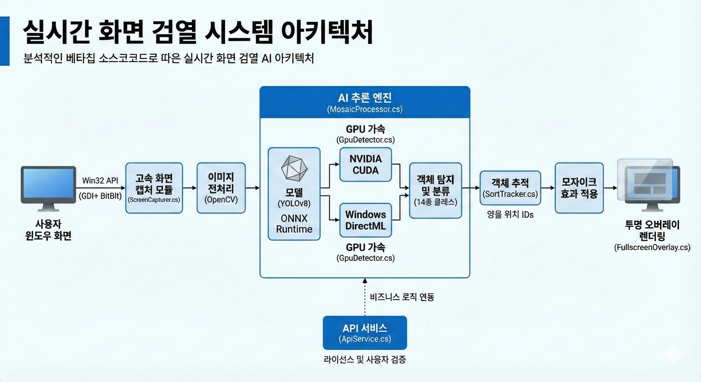

본 시스템은 고속 화면 캡처, 딥러닝 추론 최적화, 그리고 유연한 오버레이 렌더링 기술이 집약된 엔드투엔드 솔루션입니다. 아래 아키텍처는 데이터의 흐름과 각 모듈의 유기적인 결합을 나타냅니다.

▲ 실시간 화면 검열 시스템 파이프라인 (캡처 - 전처리 - 추론 - 렌더링)
성능 지연을 최소화하기 위해 Win32 API인 GDI+ 및 BitBlt를 활용한 ScreenCapturer 모듈을 구축했습니다.
이를 통해 윈도우 전체 화면을 실시간으로 획득하며, 멀티 모니터 환경에서도 안정적인 캡처 성능을 유지합니다.
학습된 YOLOv8 모델을 ONNX Runtime으로 최적화하여 탑재했습니다.
GpuDetector를 통해 하드웨어 환경을 자동으로 분석하여 NVIDIA CUDA 또는 Windows DirectML 가속을 선택적으로 적용함으로써 범용성과 성능을 동시에 확보했습니다.
탐지된 객체의 연속성을 보장하기 위해 SortTracker 알고리즘을 적용하여 고유 ID 기반의 객체 관리를 수행합니다.
최종 검열 결과는 투명하게 설계된 FullscreenOverlay를 통해 사용자 화면 최상단에 렌더링되며, 시스템 오버헤드를 줄이기 위한 최적화된 드로잉 로직이 포함되어 있습니다.